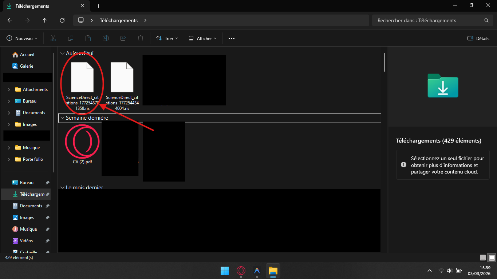
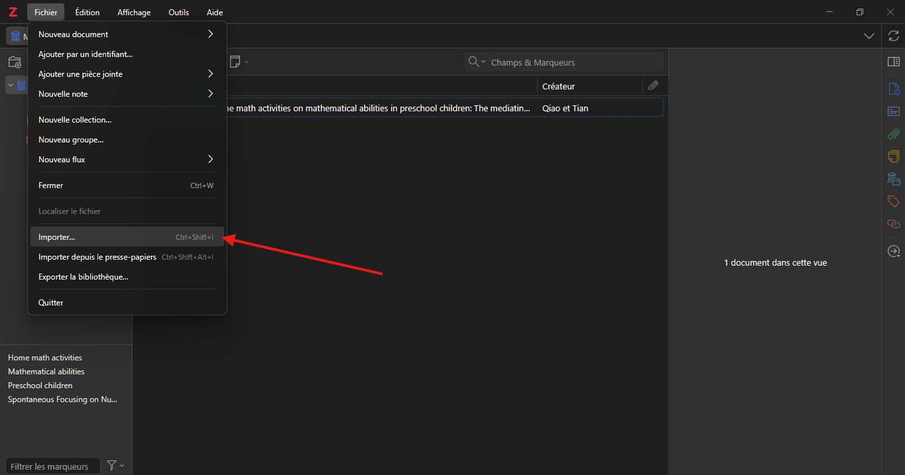
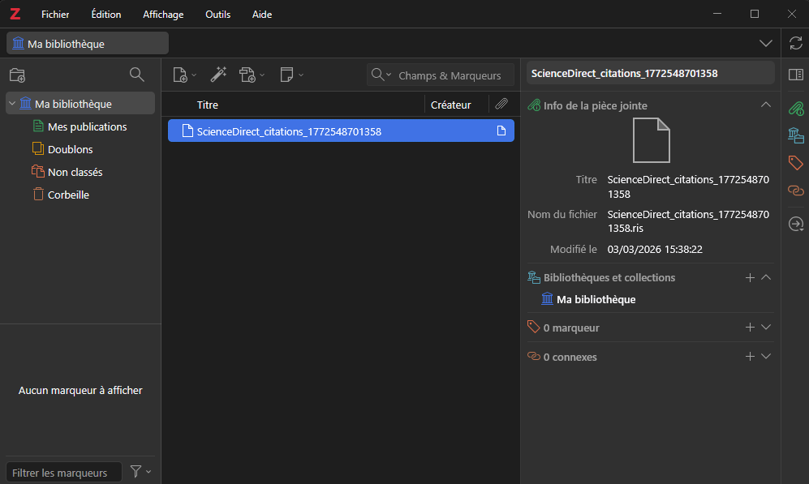

Français
Français
 English
English
Guide d'exportation ScienceDirect vers Zotero.
⏱ Lecture estimée : ~5 min
Démonstration Vidéo
Installation de Zotero
Avant de commencer le tutoriel, vous devez avoir installé Zotero sur votre poste.
Accès à ScienceDirect
Rendez-vous sur le site via ce lien : ScienceDirect.
Vous serez redirigé automatiquement via le portail de la BU.

Recherche sur ScienceDirect
Une fois sur ScienceDirect, utilisez la barre de recherche principale. Entrez vos mots-clés (en anglais de préférence) pour trouver des articles pertinents.

Sélection des Résultats
Dans la liste des résultats, identifiez les sources utiles. Cochez la case située à gauche de chaque titre pour les ajouter à votre sélection d'export.

Menu d'Exportation
En haut de la liste de résultats, repérez le lien "Export". Cliquez dessus pour dérouler les options d'exportation disponibles.

Choix du Format
Dans le menu qui s'affiche, choisissez "Export citation to RIS".
Note importante :
Le nom "Zotero" n'apparaît pas dans le menu. C'est normal ! Le format RIS est celui qu'il faut sélectionner pour Zotero.

Même principe pour BibTeX et Texte
Le processus est identique : choisissez simplement "Export citation to BibTeX" (LaTeX, Overleaf…) ou "Export citation to text" selon vos besoins.
Téléchargement du Fichier
Après avoir cliqué sur "Export citation to RIS", le fichier
ScienceDirect_citations_[...].ris se télécharge automatiquement.
Vérifiez qu'il apparaît bien dans votre dossier Téléchargements (cerclé en rouge sur la capture).

Import dans Zotero
Ouvrez Zotero, allez dans Fichier > Importer, puis sélectionnez
le fichier .ris téléchargé. La référence apparaît alors dans Ma bibliothèque.

Vérification et Utilisation
Dans le panneau de droite de Zotero, vérifiez que le titre, le nom du fichier et la date de modification sont corrects. Vous pouvez maintenant utiliser cette référence dans Word via le plugin Zotero.

Testez vos connaissances
1. Quel format de fichier faut-il choisir pour l'export ?
2. Où se trouve le bouton d'export sur ScienceDirect ?
3. Peut-on exporter plusieurs articles à la fois ?